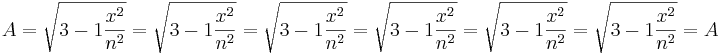

Inteligencia
 De: La Frikipedia, la enciclopedia extremadamente seria.
De: La Frikipedia, la enciclopedia extremadamente seria.

No existe problema irresoluble, sino inteligencia limitada
Dícese de la cualidad que poseen, en mayor o menor grado, la mayoría de monstruos especies del planeta. Dentro de la misma especie, hay individuos que poseen diferentes cantidades de inteligencia, siendo los que más tienen aquellos que lideran a la especie (salvo en el caso de la especie humanos).
Tipos de Inteligencia
- Numérica: Permite resolver Sudokus. También permite contar: 'Tengo X
XX manzanas'.
- Matemática: Permite intuir aproximadamente el cambio de la compra, para que no te timen, así como hacer cálculos del tipo 'Si tengo X manzanas y me como una, entonces me quedan (X-1) manzanas'.
- Filosófica: Permite hacer profundas reflexiones, que parecen no tener fin: 'Tengo X manzanas, y si me como una, sigo teniendo X manzanas, pues aparte de las que me quedan tengo la de mi interior. Por otro lado, deja de pertenecer al concepto universal de manzana al ser mordida, pues está incompleta, así que en realidad...'.
- Lógica: Permite hacer deducciones perfectamente válidas como 'Si existe el color verde y existen los perros, entonces existen los perros verdes. Hay manzanas verdes, por tanto existen manzanas que comen perros. Verdes.'
- Militar: La Inteligencia Militar es lo que se conoce como Oxímoron, una contradicción dentro de un mismo término: 'Hemos inventado un nuevo agente bacteriológico basado en la manzana'.
- Naturalista: Dícese de aquella que te permite saber si algo es verde o no. Ejemplo: 'Esa manzana es verde'
- Artificial: La que tienen los ordenadores. Permite crear bases de datos sobre (por ejemplo) todas las manzanas que se han visto, y, según se van pudriendo dichas manzanas (pues comérselas sería como destruir datos), decir que hay sectores del archivo que están corrompiéndose. La mayor Inteligencia Artificial relacionada con manzanas es la que tienen los ordenadores Mac. Pese a todo, ciertos filósofos afirman que, como que el logotipo de Mac es una manzana mordida, en realidad no es una manzana, pues al estar incompleta, ha dejado de pertenecer al concepto universal de manzana, así que en realidad...
- Basica: Te permite pensar en cosas simples como 'la manzana es una fruta'
Utilidades de la Inteligencia (o Intelecto)
- Escribir artículos en la Frikipedia.
- Escaquearse de hacer tareas.
- Andar y masticar chicle a la vez.
- Aumentar el máximo de maná por nivel.
- Saber calcular complejas operaciones de alto nivel como 2+2
- Conocer el color del caballo blanco de Santiago.
- Saber que las alteraciones en la Fuerza en realidad no son tales, sino que simplemente tienes que ir al baño o te lo harás encima.
- Entender que dos errores, por mucho que se intente, no suman un acierto. Ni de coña.
- Saber que 
- Saber cosas de alta complejidad como 'el agua moja' o 'el fuego quema'
Estudio sobre inteligencia en la sociedad humana
Para comprobar los niveles de inteligencia de un grupo social humano, se llevaron a cabo ciertos estudios, cuya conclusión sobre la relación entre el nivel intelectual y la socialización fue la siguiente:
- Como seres inteligentes que somos, despreciamos y marginamos a todos aquellos con un nivel de inteligencia menor que el nuestro por considerarlos inferiores, y ellos nos desprecian y marginan por considerarnos bichos raros.
- Aplicamos la misma dinámica pero a la inversa con personas de intelectos superiores.
- A las personas de un mismo nivel intelectual las consideramos competidores, por lo que son despreciadas y marginadas.
De estas conclusiones se obtiene como corolario que todo aquel que posee inteligencia es antisocial, rehúye la compañía y prefiere estar solo. Por tanto, cualquier grupo social (incluyendo canis, jessis, políticos y demás) estará formado por personas cuyo nivel intelectual es nulo, razón por la cual ocupan puestos aparte en el Escalafón de Inteligencia Interracial.
Escalafón de Inteligencia Interracial
También llamado EII (de ahí la frase 'EII, tío, qué listo eres'). Es una clasificación de la superioridad o inferioridad intelectual de las distintas razas que pueblan la Tierra. He aquí el 'Top Ten':
- Esparragos
- Delfines
- Humanos
- Iguanas
- Calicus Aspañolus
- Piedras Filosofales
- Dodos
- Coliflores
- Las cacas
- Diablos
- Jorge Arbusto
[...]
Al final de la cadena podemos encontrar a los Canis
Inteligencia Humana en Grupos
Aquí se muestra una lista de grupos de seres humanos, desde los más inteligentes hasta los menos agraciados (lentos, sin ideas, bobos). Evidentemente, no necesariamente tienen que estar en un determinado grupo para ser lentos, sólo con pertenecer a ese grupo es suficiente para saber su nivel de inteligencia. El rango de inteligencia varía entre 0 y 200, siendo 0 el mínimo y 200 el máximo.
- Frikipedistas. Grupo único; sólo ellos poseen una inteligencia mayor a 200.
- Nerds, ratones de biblioteca. Poseen la inteligencia más alta de todas (200). Por ello no se reproducen y todavía nadie ha averiguado cómo cojones nacen. Se cree que provienen de chatarra espacial.
- Rockeros y Metaleros. Su inteligencia oscila entre 180 y 130 ya que, pese a las creencias populares, las neuronas no son inmunes a la marihuana y al alcohol, elemento básico de cualquier metalero o rockero para sobrevivir.
- Skaters, Rastafaris, Surfistas y Raperos. Poseen una inteligencia de alrededor 120, según los últimos datos de la ONU. Esto no indica que sean lentos, simplemente que la coca-cola mezclada con los porros afecta de manera más grave a las neuronas que la cerveza.
- Las teóricas personas normales. Son los que no pertenecen a ningun grupo social. Dícese de abuelos y padres (estos son los últimos en demostrar un resto de inteligencia, la cual oscila entre 120 y 1, dependiendo de la edad).
- Por último, aquellos que sólo entran en esta estúpida clasificación por ser humanos (aún no se ha demostrado lo contrario, pese a que las suposiciones e investigaciones avanzan rápidamente) son aquellos que no poseen inteligencia. Dícese de canis, tukis, sifrinos, pijos, emos, reggetoneros, Bush, uribe velez, IP anónima y Chávez.
Personas que carecen de ella
- Zapatero
- Esto... politicos en general
- Bush
- Homer Simpson
- Peter Griffin
- Reggaetoneros
- La familia Klamstein
- Tú
- Futbolistas
- Jugadores de baloncesto
- Los creadores de E.T.
- Emos de toda clase
- Canis
- Cualquier usuario habitual de Facebook
Autor(es):
- Krusher
- Pakolo
- Cortocircuito
- Hari Seldon
- Simoman
- Frikiman
- Aque
- Marc CAT
- Roms
- Faith
Frikipedia 2005-2016, Licencia
GFDL 1.2 - Extraído por FrikiLeaks